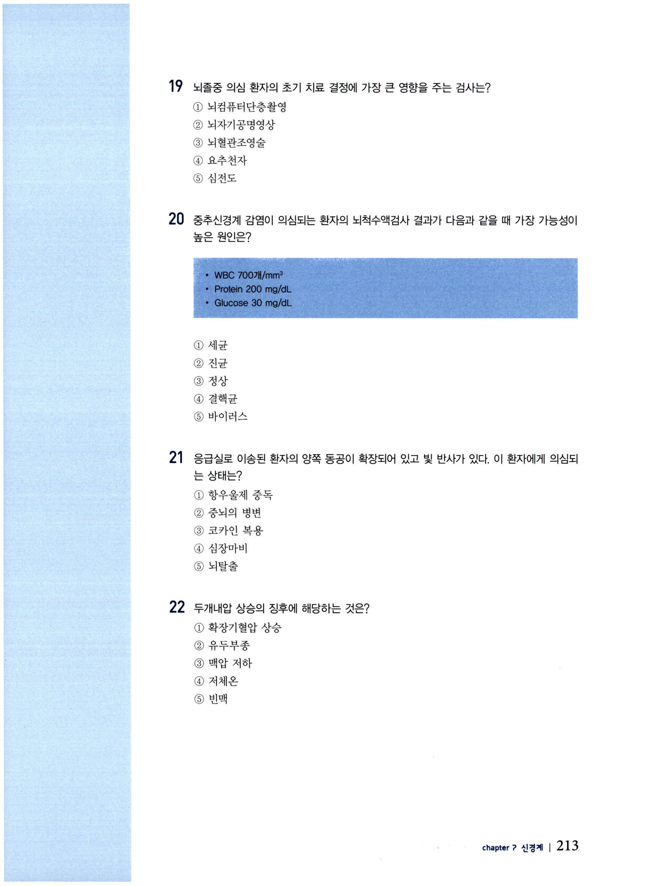
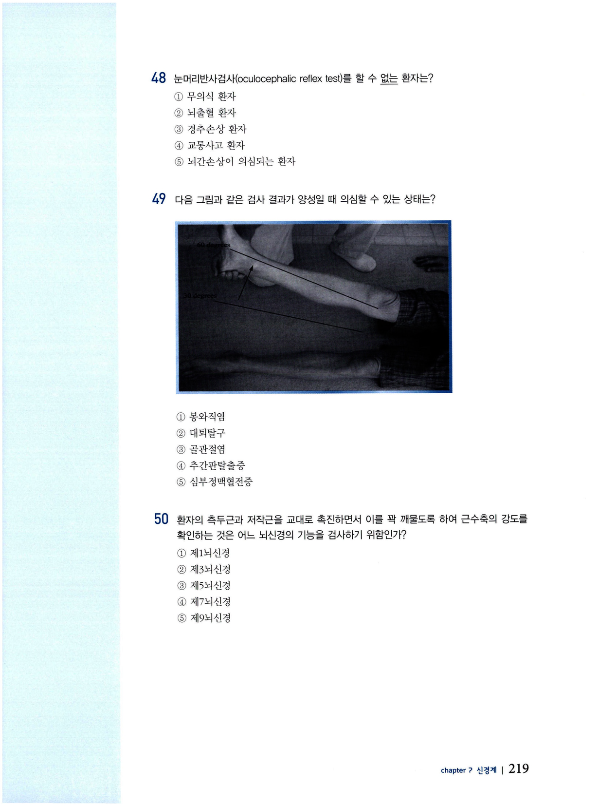
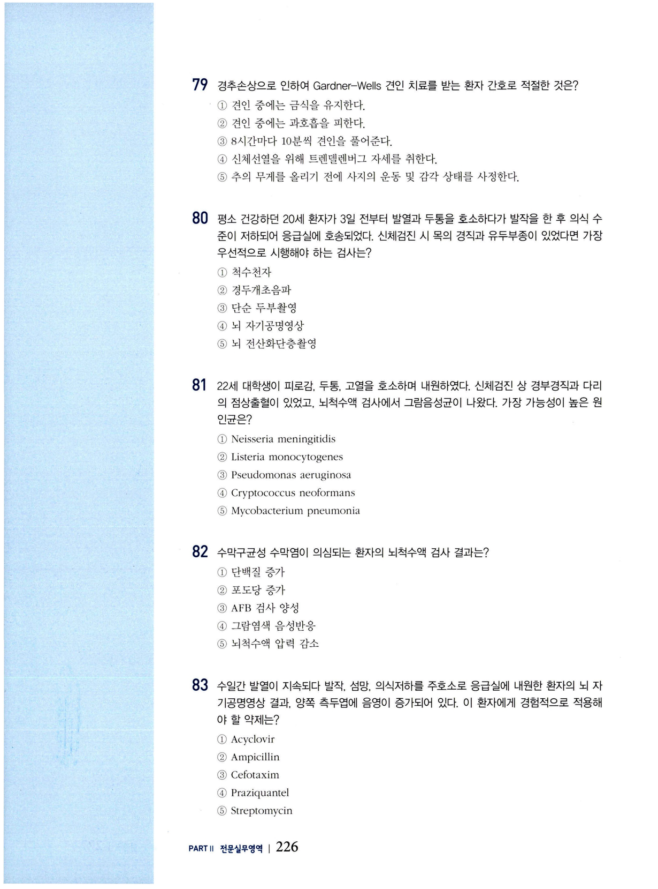
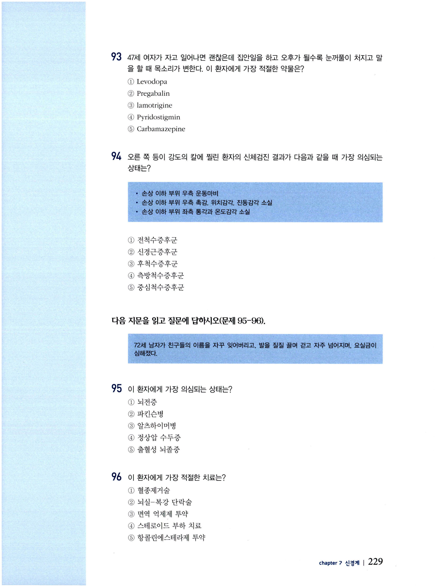
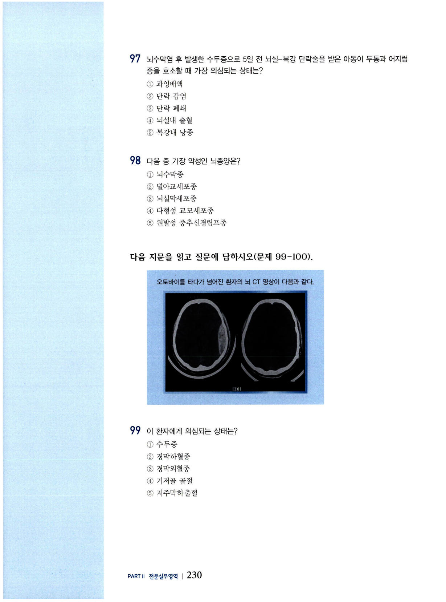
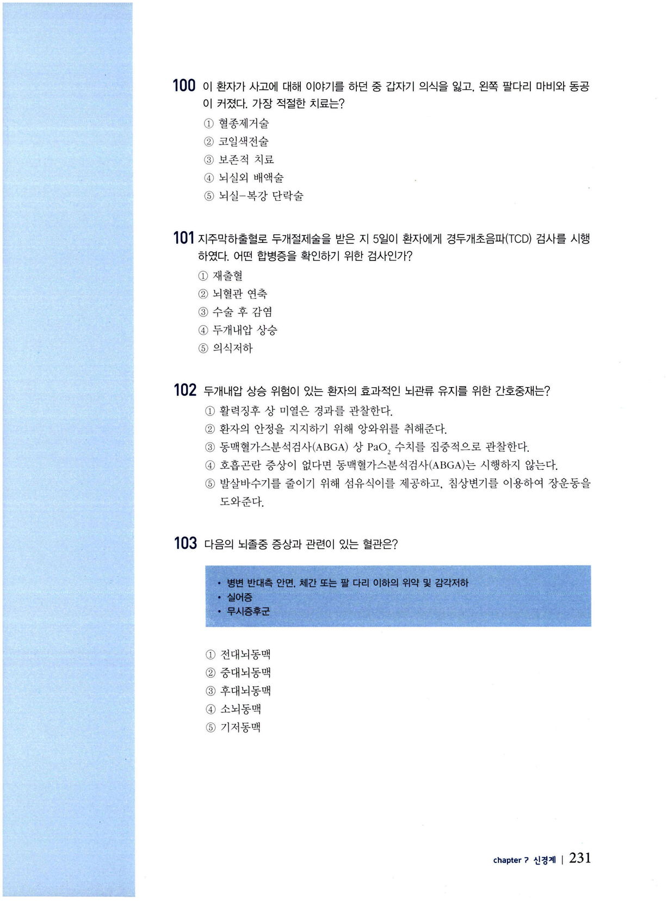
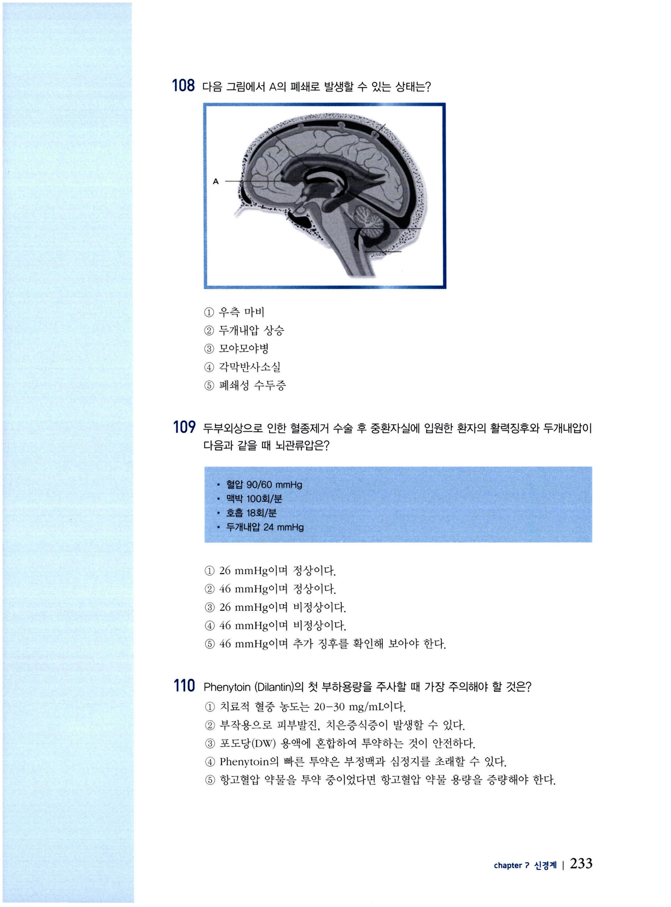
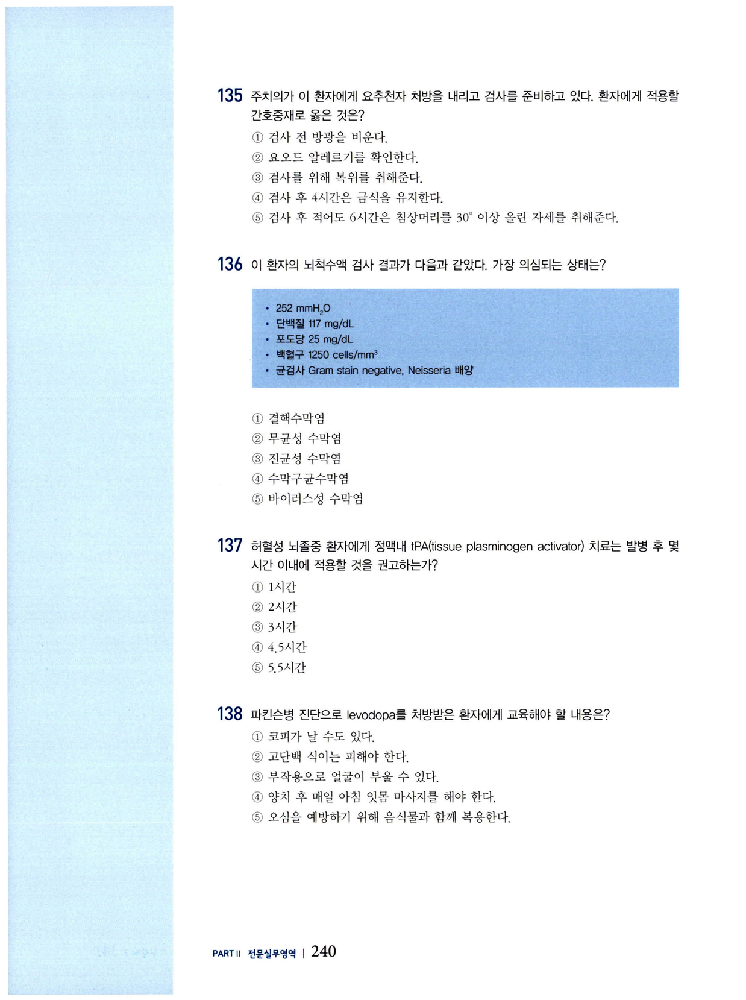
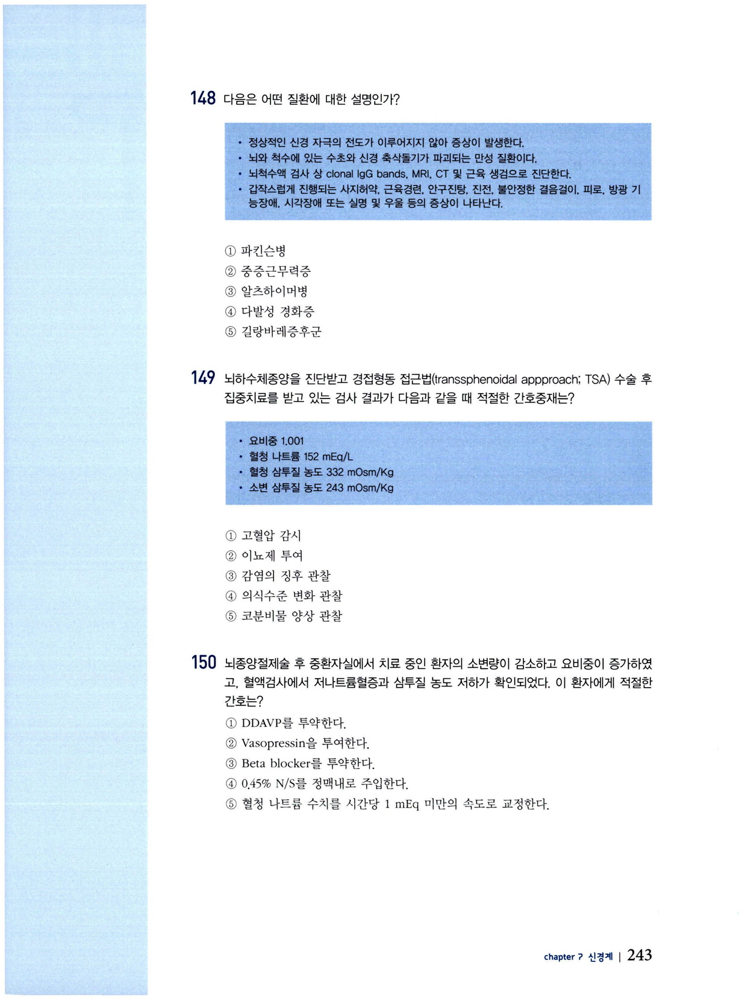

신경계 문제
전문간호사 자격시험 대비 문제집 — 신경계 (CHAPTER 7).
문 01 요추천자 부위
요추천자를 요추 3~4번째 척주 사이 공간에서 시행하는 이유는?
- 척추 사이의 간격이 가장 넓다
- 시술자가 접근하기에 용이하다
- 척수를 손상시킬 위험이 적다
- 통증이 가장 적은 부위이다
- 뇌척수액이 가장 많다
문 02 실어증
뇌졸중 환자가 간호사의 말은 이해하지만 본인이 하고 싶은 말은 하지 못한다. 의심되는 상태는?
- 완전 실어증
- 유창 실어증
- 알츠하이머병
- 감각성 실어증
- 운동성 실어증
문 03 일과성 허혈발작
67세 남자가 갑작스럽게 말이 어둔해지고 어지럽고 몸에 힘이 빠졌으나 3~4시간 후에 회복되었다. 이 환자에게 의심되는 상태는?
- 뇌경색
- 심인성 실신
- 출혈성 뇌졸중
- 혈관억제성 실신
- 일과성 허혈성 발작
문 04 극소동공(pinpoint pupil)
환자에게 극소동공(pinpoint pupil)이 관찰된다면 의심되는 상태는?
- 심정지
- 뇌교출혈
- 각성제 중독
- 동안신경마비
- 아트로핀 투약
문 05 조정기능 검사
신경계의 조정기능을 평가하는 검사는?
- 근력검사
- 소멸검사
- 발꿈치-무릎검사
- 회내근 처짐검사
- 바빈스키반사검사
문 06 간헐적 파행증
척추관협착증 환자의 간헐적 파행증(intermittent claudication)의 특징은?
- 한쪽 다리만 아프다
- 통증이 갑자기 시작된다
- 족배동맥 박동이 감소한다
- 누운 상태에서 다리를 못 든다
- 걸음을 멈추면 증상이 사라진다
문 07 GCS 점수
교통사고 후 환자가 통증자극을 줄 때만 눈을 뜨고 말은 못하지만 신음소리를 내고 지시를 따르지 못하면서 다만 통증자극을 줄 때 몸을 피하려고 한다. 이 환자의 글래스고 혼수척도(GCS) 점수는?
- E3V4M5
- E3V3M4
- E2V2M5
- E2V2M4
- E3V2M3
문 08 파킨슨병 증상
파킨슨병의 증상에 해당하는 것은?
- 휴식 시 떨림이 완화된다
- 초기 증상은 하지에서 시작된다
- 수의적 움직임 시 진전이 약화된다
- 글씨 쓸 수 있지만 속도가 느려진다
- 주먹을 꼭 쥔 것 같은 손동작이 특징적이다
문 09 중증근무력증·텐실론검사
중증근무력증 환자에게 진단 목적으로 텐실론(Tensilon)을 주사할 때 예상되는 반응은?
- 혈압이 하강한다
- 오심/구토가 심해진다
- 증상이 일시적으로 심해진다
- 30초 이내에 근력이 향상된다
- 구강이 건조해지고 통증이 초래된다
문 10 길랑바레증후군 증상
길랑바레(Guillain-Barre)증후군의 증상에 해당하는 것은?
- 하행성 운동마비
- 심부건반사 감소
- 비대칭성 근 약화
- 진전을 동반한 운동실조
- 근위축을 동반한 강직성 마비
문 11 경추수술 후 우선 사정
경추수술 후 환자에게 가장 우선적으로 사정해야 하는 것은?
- 운동마비
- 호흡장애
- 배뇨장애
- 욕창 발생
- 수술부위 감염
문 12 유두부종
유두부종(papilledema)에 대한 설명으로 옳은 것은?
- 망막동맥의 출혈이다
- 황반변성과 관련이 있다
- 주변시야에 문제가 생긴다
- 검안경으로 확인할 수 있다
- 시신경유두의 염증으로 인해 발생한다
문 13 SIADH
항이뇨호르몬부적절분비증후군(SIADH)에 대한 설명으로 옳은 것은?
- 탈수가 나타난다
- 고나트륨혈증이 발생한다
- S-Osm가 320 이상으로 상승한다
- 항이뇨호르몬의 분비가 감소한다
- 권태감, 발작, 혼수가 발생할 수 있다
문 14 중추성 요붕증/대뇌염분소모
교통사고로 외상성 뇌손상 진단을 받은 환자에게 탈수, 체중감소, 체위성 저혈압이 발생하였다. 이 환자에게 의심되는 상태는?
- 애디슨병
- 쿠싱증후군
- 중추성 요붕증
- 대뇌염분소모증후군
- 항이뇨호르몬부적절분비증후군
문 15 척수쇼크 징후
척수쇼크의 징후에 해당하는 것은?
- 빈맥
- 혈압저하
- 반사소실
- 소변량 감소
- 피부온도 하강
문 16 두개저골절
교통사고 환자의 코에서 맑은 물이 흐르고 눈 주변에 반상출혈이 있을 때 의심할 수 있는 손상은?
- 경막상혈종
- 경막하혈종
- 두개저골절
- 지주막하출혈
- 두개함몰골절
문 17 척수손상 증후군
교통사고로 허리를 다친 환자의 신경계검진 결과 손상부위 이하로 동측의 운동과 촉각 그리고 반대측의 통증감각과 온도감각이 저하되어 있다. 이 환자에게 의심되는 상태는?
- 척수쇼크
- 전척수증후군
- 중심척수증후군
- 측방척수증후군
- 후방척수증후군
문 18 Cincinnati Prehospital Stroke Scale
급성뇌졸중 환자의 병원 전단계에서 사용되는 Cincinnati Prehospital Stroke Scale 항목에 포함되는 것은?
- 두통
- 구토
- 감각
- 언어
- 의식
문 19 뇌졸중 초기 검사
뇌졸중 의심 환자의 초기 치료 결정에 가장 큰 영향을 주는 검사는?
- 뇌컴퓨터단층촬영
- 뇌자기공명영상
- 뇌혈관조영술
- 요추천자
- 심전도
문 20 뇌척수액검사 해석
중추신경계 감염이 의심되는 환자의 뇌척수액검사 결과가 다음과 같을 때 가장 가능성이 높은 원인은?
WBC 700/mm³, Protein 200 mg/dL, Glucose 30 mg/dL
- 세균
- 진균
- 정상
- 결핵균
- 바이러스

문 21 양측 동공확장
응급실로 이송된 환자의 양쪽 동공이 확장되어 있고 빛 반사가 있다. 이 환자에게 의심되는 상태는?
- 항우울제 중독
- 중뇌의 병변
- 코카인 복용
- 심장마비
- 뇌탈출
문 22 두개내압 상승 징후
두개내압 상승의 징후에 해당하는 것은?
- 확장기혈압 상승
- 유두부종
- 맥압 저하
- 저체온
- 빈맥
문 23 삼차신경통
주로 볼, 턱, 입술 부위에 타는 듯한 느낌이 특징적인 질환은?
- 지주막하출혈
- 삼차신경통
- 측두동맥염
- 군집두통
- 편두통
문 24 뇌척수액검사 후 추가검사
두통, 발열, 목의 경직을 호소하는 환자의 뇌척수액검사 결과 외양이 투명하고 압력은 약간 상승하였으며, 포도당과 단백질은 정상이다. 이 환자의 진단을 위해 가장 필요한 검사는?
- 뇌파검사
- 소변배양검사
- 머리방사선촬영
- 뇌컴퓨터단층촬영
- 중합효소연쇄반응검사
문 25 바이러스 수막염
바이러스 수막염의 징후에 해당하는 것은?
- 편마비
- 목 경직
- 혈압 상승
- 시야결손
- 안구진탕
문 26 NIH Stroke Scale
미국국립보건원 뇌졸중 척도(NIH Stroke Scale)에 대한 설명으로 옳은 것은?
- 정상인의 표준점수와 비교한다
- 점수가 높을수록 중증이다
- 3개 항목으로 구성된다
- 혈액검사가 포함된다
- 3-5분 정도 소요된다
문 27 만성 수두증 증상
성인에게 발생하는 만성 수두증의 주요 증상에 해당하는 것은?
- 실신
- 구토
- 허약
- 감각장애
- 보행장애
문 28 SIADH 특성
항이뇨호르몬부적절분비증후군(SIADH)의 특성으로 옳은 것은?
- 소변량 증가
- 체액량 감소
- 혈청나트륨 감소
- 혈청삼투질농도 증가
- 소변삼투질농도 감소
문 29 와파린 모니터링
허혈성 뇌졸중 치료 후 퇴원약에 와파린(warfarin)이 포함된 환자에게 주기적으로 체크해야 하는 혈액검사는?
- INR
- aPTT
- Bleeding time
- 혈중칼륨농도
- 혈중와파린농도
문 30 의식명료기간·경막외혈종
의식명료기간(lucid interval)을 동반하는 두부손상은?
- 지주막하출혈
- 경막외혈종
- 기저골절
- 뇌진탕
- 뇌좌상
문 31 중증근무력증 진단약물
복시, 안검하수, 근력 약화를 호소하는 40대 여자의 진단을 위하여 주사할 수 있는 약물은?
- 텐실론
- 도파민
- 피리독신
- 스테로이드
- 아드레날린
문 32 파킨슨병 징후
파킨슨병 환자의 징후에 대한 설명으로 옳은 것은?
- 근긴장이 저하된다
- 고혈압을 동반한다
- 원발성 떨림이 있다
- 운동마비가 발생한다
- 사지와 관절이 뻣뻣하다
문 33 L4-5 추간판탈출증
L4-5 추간판 탈출증 환자의 임상증상에 해당하는 것은?
- 하지로 방사되는 통증
- 무릎 굴곡 시 목 통증
- 늑골 하부의 통증
- 손과 팔의 저림
- 호흡곤란
문 34 뇌하수체선종 절제술 후 요붕증
뇌하수체선종 절제술 후 환자에게 요붕증이 발생하였다. 이 환자의 상황에 대한 적절한 설명은?
- 혈압이 상승한다
- 소변량이 감소한다
- 수분중독의 위험이 있다
- 저나트륨혈증이 예상된다
- 혈중 항이뇨호르몬 농도가 낮다
문 35 뇌농양 진단
뇌농양의 주 진단방법은?
- 뇌컴퓨터단층촬영
- 경두개초음파
- 뇌동맥조영술
- 뇌조직검사
- 요추천자
문 36 병적 반사
다음 중 건강한 성인에게는 나타나지 않는 병적 반사는?
- 바빈스키반사
- 심부건반사
- 각막반사
- 복부반사
- 구역반사
문 37 NIH Stroke Scale 항목
미국국립보건원 뇌졸중 척도(NIH Stroke Scale)의 검사 항목에 포함되는 것은?
- 각막반사
- 시야검사
- 심부건반사
- 안구전정검사
- 동공의 빛반사
문 38 경막하혈종
경막하혈종(subdural hematoma)에 대한 설명으로 옳은 것은?
- 초승달 모양이다
- 주원인은 고혈압이다
- 혈관조영술로 진단한다
- 주 손상혈관은 중경막동맥이다
- 두개골과 경막 사이에 혈종이 발생한다
문 39 중증근무력증 악화
중증근무력증 환자의 근허약이 심해지고 동공이 축소되고 서맥이 있을 때 확인해야 할 것은?
- 복용 약의 용량
- 뇌졸중의 증상
- 흉선의 크기
- 영양부족
- 임신
문 40 편두통
편두통에 대한 설명으로 옳은 것은?
- 이차성이다
- 전조를 동반한다
- 머리의 뒤편에 주로 발생한다
- 눈물과 콧물을 흔히 동반한다
- 지속적인 근육긴장에 의해 유발된다
문 41 일과성 허혈발작
갑작스럽게 어지럼증, 구음장애, 근육약화가 발생하여 응급실을 방문하였으나 증상들이 사라지고 영상검사 결과도 음성이었다. 이 환자에게 의심되는 상태는?
- 뇌색전증
- 뇌내출혈
- 메니에르병
- 동정맥기형
- 일과성 허혈발작
문 42 지주막하출혈 원인 검사
지주막하 출혈의 원인을 파악하기 위하여 반드시 실시해야 하는 검사는?
- 요추천자
- 경두개초음파
- 뇌혈관조영술
- 뇌자기공명영상
- 뇌컴퓨터단층촬영
문 43 뇌혈관연축 조기발견
지주막하출혈 환자의 뇌혈관연축 조기발견을 위하여 필요한 검사는?
- 요추천자
- 경두개초음파
- 뇌혈관조영술
- 뇌자기공명영상
- 뇌컴퓨터단층촬영
문 44 다발성 경화증 진단
다발성 경화증 환자의 진단을 위하여 필요한 검사는?
- 근전도
- 뇌전도
- 척수천자
- 뇌자기공명영상
- 뇌컴퓨터단층촬영
문 45 루게릭병(ALS)
루게릭병에 대한 설명으로 옳은 것은?
- 하체부터 증상이 시작된다
- 혈중 CK 농도로 확진한다
- 호흡기감염 후 발생한다
- 인지기능은 보존된다
- 건반사가 항진된다
문 46 뇌농양 증상·징후
뇌농양의 증상 및 징후로 옳은 것은?
- 국소 신경학적 장애가 나타난다
- 의식수준에는 영향을 주지 않는다
- 뇌척수액 천자 시 압력이 감소한다
- 질병이 진행되면 오한과 발열이 나타난다
- 전두엽 농양인 경우 안구진탕이 발생한다
문 47 광범위 축삭손상
두부외상 후 뇌컴퓨터촬영 상 국소 병소가 없으나 임상적으로 혼수상태가 6시간 이상 지속되는 것은?
- 뇌수막염
- 척수쇼크
- 경막외혈종
- 경막하혈종
- 광범위축삭손상
문 48 눈머리반사검사 금기
눈머리반사검사(oculocephalic reflex test)를 할 수 없는 환자는?
- 무의식 환자
- 뇌출혈 환자
- 경추손상 환자
- 교통사고 환자
- 뇌간손상이 의심되는 환자
문 49 그림 검사 양성
다음 그림과 같은 검사 결과가 양성일 때 의심할 수 있는 상태는?
- 봉와직염
- 대퇴탈구
- 골관절염
- 추간판탈출증
- 심부정맥혈전증

문 50 뇌신경 기능검사
환자의 측두근과 저작근을 교대로 촉진하면서 이를 꽉 깨물도록 하여 근수축의 강도를 확인하는 것은 어느 뇌신경의 기능을 검사하기 위함인가?
- 제1뇌신경
- 제3뇌신경
- 제5뇌신경
- 제7뇌신경
- 제9뇌신경
문 51 급성 뇌졸중 초기 검사
55세 남자가 2시간 전에 갑자기 발생한 좌측 반신마비와 안면마비를 호소하여 응급실에 도착하였다. 내원 당시 혈압은 190/110 mmHg이다. 이 환자에게 가장 먼저 시행해야 할 검사는?
- 뇌 CT
- 뇌 MRI
- 뇌파검사
- 뇌혈류검사
- 뇌혈관조영술
문 52 출혈성 뇌졸중 특징
뇌졸중 증상 중 출혈성 뇌졸중에서 두드러지게 나타나는 것은?
- 편마비
- 수면 중 발생
- 발병 시 심한 두통
- 일과성 허혈증이 선행함
- 의식 장애보다 신경학적 장애가 많음
문 53 급성 뇌경색 치료
평소 고혈압, 당뇨병이 있는 62세 남자가 갑자기 우측 상지 마비와 실어증 발생으로 인해 20분 만에 응급실에 도착하였다. 환자의 의식은 명료하고 뇌 CT 상 출혈 소견은 없고 혈액응고검사 결과는 정상이다. 이 환자에게 가장 적절한 치료 방법은?
- 스텐트 삽입술
- 경동맥내막절제술
- 정맥내 혈전용해제 투여
- 혈관확장제 투여
- 코일색전술
문 54 정맥내 혈전용해술 적응증
뇌 CT 상 출혈 흔적이 없는 급성기 뇌경색으로 진단되어 정맥내 혈전용해술을 시행하고자 한다. 다음 중 정맥내 혈전용해술이 가능한 경우는?
- 혈당 45 mg/dL
- 혈소판 수치 90,000 /mm³
- 수축기 혈압 200 mmHg
- 2개월 전 심근경색 발생 병력
- 경구항응고제 복용 중이며 현재 INR 1.5
문 55 정맥 내 혈전용해술 간호
급성 뇌경색으로 정맥 내 혈전용해술 치료를 받는 환자에게 적절한 간호중재는?
- 몸무게 Kg당 0.9 mg을 계산한 용량의 50%는 5분 동안 일시주입하고, 나머지는 60분간 주입한다
- 혈전용해제 투여 후 6시간 동안은 1시간마다 신경학적 평가를 시행한다
- 혈전용해제 투여 후 첫 2시간 동안 15분마다 혈압을 측정한다
- 정맥 내 혈전용해제 투여는 일반 병실에서 시행 후 모니터한다
- 수축기 혈압이 160 mmHg 이상이면 labetalol 10 mg을 정맥투여 한다
문 56 항혈소판제 기전
뇌경색의 재발 가능성을 낮추기 위한 약물 중 기전이 다른 것은?
- Aspirin
- Cilostazol
- Clopidogrel
- Ticlopidine
- Warfarin
문 57 심방세동·뇌졸중 예방
심방세동 환자의 뇌졸중 발생 예방을 위해 사용하는 약물은?
- Aspirin
- Warfarin
- Cilostazol
- Ticlopidine
- Clopidogrel
문 58 손상 혈관 추정
평소 고혈압, 당뇨병이 있는 62세 남자가 갑자기 우측 상지마비와 실어증이 발생하여 20분 만에 응급실에 도착하였다. 환자의 증상을 바탕으로 손상된 혈관을 추정한다면?
- 우측 전대뇌동맥
- 우측 중대뇌동맥
- 좌측 전대뇌동맥
- 좌측 중대뇌동맥
- 기저동맥
문 59 손상 혈관 추정
심방세동 부정맥이 있는 50세 남자가 갑작스런 좌측 다리 마비와 감각장애를 호소하여 응급실을 방문하였다. 손상이 의심되는 뇌혈관은?
- 우측 전대뇌동맥
- 우측 중대뇌동맥
- 좌측 전대뇌동맥
- 좌측 중대뇌동맥
- 기저동맥
문 60 연하장애 환자 식이
연하기능이 저하된 뇌졸중 환자의 음식 섭취 방법으로 적절한 것은?
- 물과 함께 삼킨다
- 고개를 들어서 삼킨다
- 음식의 점도를 높여준다
- 숨을 내쉬면서 음식을 삼킨다
- TV를 보는 등 주의를 분산시키면 쉽게 삼길 수 있다
문 61–62 지주막하출혈(묶음)
택배직원이 오전 10시쯤 무거운 상자를 옮기던 중 망치로 머리를 내리치는 것 같은 극심한 두통을 호소하다가 의식을 잃었다. 응급실 도착 당시 환자는 눈을 감고 있었고 흔들어 깨우니 묻는 말에 적절히 대답을 했다. 신체검진 시 목 경직이 보이고 우측 안검 하수와 동공이 확장되어 있다.
이 환자에게 의심되는 상태는?
- 뇌수막염
- 뇌경색
- 뇌출혈
- 안면마비
- 중증근무력증
이 환자는 뇌 CT 상 뇌동맥류 파열로 인한 지주막하출혈로 진단되어 병실로 이송되었다. 입원 당일 밤 극심한 두통과 구토를 호소하여 의식이 저하되어 반응이 없다. 이 환자에게 의심되는 상태는?
- 발작
- 재출혈
- 수두증
- 뇌수막염
- 뇌혈관연축
문 63 SAH 10일째
지주막하출혈 환자가 입원 10일째에 갑자기 말이 어둔해지고 불안정한 모습을 보이며 반응이 떨어진다. 가장 의심되는 상태는?
- 발작
- 재출혈
- 수두증
- 뇌수막염
- 뇌혈관연축
문 64 뇌혈관연축 검사
지주막하출혈 환자의 뇌혈관 연축이 의심될 때 시행하는 검사는?
- 뇌 CT
- 뇌 MRI
- 뇌파검사
- 경두개초음파
- 뇌혈관조영술
문 65 결찰술 후 연축
뇌동맥류 결찰술 후 10일째인 환자의 말이 어눌하고 정맥주사 바늘을 빼려고 하여 불안정한 모습을 보인다. 뇌 CT 상 이상소견은 없고 경두개초음파 검사 결과 중대뇌동맥의 평균 혈류속도가 240 cm/sec이다. 이 환자에게 의심되는 상태는?
- 발작
- 재출혈
- 수두증
- 뇌수막염
- 뇌혈관연축
문 66 SAH 후 수두증
지주막하출혈로 수술과 치료를 마치고 퇴원한 환자가 3개월 만에 보행장애와 소변을 지리는 증상으로 다시 내원하였다. 이 환자에게 의심되는 상태는?
- 발작
- 재출혈
- 수두증
- 뇌수막염
- 뇌혈관연축
문 67 뇌혈관연축 예방
지주막하출혈 환자의 뇌혈관연축을 예방하기 위한 중재는?
- 예방적 항생제 투여
- 스테로이드제제 투여
- 칼슘통로차단제 투여
- 중심정맥압 5 mmHg 미만 유지
- 수축기혈압 150 mmHg 이하로 유지
문 68 모야모야병
7세 아동이 뜨거운 라면을 먹다가 갑자기 의식을 잃은 후 일시적으로 마비 증상을 보였다. 이 환자에게 의심되는 상태는?
- 뇌염
- 뇌경색
- 동정맥기형
- 모야모야병
- 경동맥해면정맥동루
문 69 EDAS 적응 질환
혈액순환 개선을 위해 뇌경막동맥 간접문합술(encephaloduroarteriosynangiosis; EDAS)이 필요한 질환은?
- 뇌경색
- 동정맥기형
- 모야모야병
- 해면혈관종
- 경동맥해면정맥동루
문 70 기저골 골절
교통사고로 입원한 환자의 안와 주변에 반상출혈이 관찰되고, 이루와 비루가 있을 때 의심할 수 있는 상태는?
- 수두증
- 경막하혈종
- 경막외혈종
- 기저골 골절
- 지주막하출혈
문 71 뇌척수액 누출 중재
교통사고로 입원한 환자의 코에서 연한 붉은색의 액체가 흘러나와 포도당을 측정한 결과 70 mg/dL이었고 말초 혈당은 120 mg/dL이다. 이 환자에게 적절한 중재는?
- 조기 이상을 격려한다
- 머리를 하지보다 낮게 유지한다
- 침상에서 절대안정을 취하게 한다
- 코에 거즈를 단단하게 넣어 막아준다
- 코를 풀어 이물질을 제거하도록 한다
문 72 만성 경막하혈종
70세 환자가 2주 전부터 시작된 두통과 어지럼증이 더 심해진다고 하면서 의식수준이 점차 떨어져서 내원하였다. 이 환자는 수년 전 고혈압과 심방세동 부정맥을 진단받고 항고혈압제와 와파린을 복용하고 있었다. 한 달 전 빙판길에서 넘어진 적이 있으나 당시 큰 이상이 없어 병원에 내원하지는 않았다. 이 환자에게 의심되는 상태는?
- 경막외혈종
- 경막하혈종
- 두개저 골절
- 지주막하출혈
- 미만성 축삭손상
문 73–77 경수손상(묶음)
50세 남자가 지붕을 수리하던 중 발을 헛디뎌 흙바닥으로 떨어지면서 머리를 찧었고, 119 구급차로 병원에 호송되었다. 신체검진 시 의식은 명료하였으나 삼두근건반사(triceps deep tendon reflex)가 항진되어 있고 손가락을 구부렸다 펴는 데 어려움이 있다.
이 환자에게 손상이 의심되는 부위는?
- C1-2
- C3-4
- C5-6
- C7-8
- T2-3
이 환자의 척수손상 기전으로 예측되는 것은?
- 과굴곡손상
- 과신전손상
- 압박손상
- 회전손상
- 관통손상
이 환자에게 우선적으로 시행해야 할 검사는?
- 척추 CT
- 척추 MRI
- 근전도검사
- 척추 X-ray
- 척추관조영술
병원 도착 두 시간 후에 측정한 환자의 혈압은 60/40 mmHg, 맥박은 40회/분이다. 피부는 건조하고 따뜻하다. 이 환자에게 의심되는 상태는?
- 척수공동증
- 출혈성 쇼크
- 신경성 쇼크
- 심부정맥혈전증
- 자율신경반사 항진
이 환자에게 가장 적절한 중재는?
- 심폐소생술
- 도뇨관 삽입
- 심장율동전환
- 충분한 수액 정주
- 트렌델렌버그 자세
문 78 자율신경반사 항진
흉수 1번 손상이 있는 환자가 안면홍조와 함께 심한 두통을 호소한다. 가장 적절한 중재는?
- 만니톨을 즉시 투여한다
- 마약성 진통제를 투여한다
- 스테로이드 제제를 투여한다
- 침상 머리를 평평하게 내려준다
- 방광과 직장의 팽만 여부를 확인한다
문 79 Gardner-Wells 견인 간호
경추손상으로 인하여 Gardner-Wells 견인 치료를 받는 환자 간호로 적절한 것은?
- 견인 중에는 금식을 유지한다
- 견인 중에는 과호흡을 피한다
- 8시간마다 10분씩 견인을 풀어준다
- 신체선열을 위해 트렌델렌버그 자세를 취한다
- 추의 무게를 올리기 전에 사지의 운동 및 감각 상태를 사정한다
문 80 수막염 우선 검사
평소 건강하던 20세 환자가 3일 전부터 발열과 두통을 호소하다가 발작을 한 후 의식 수준이 저하되어 응급실에 호송되었다. 신체검진 시 목의 경직과 유두부종이 있었다면 가장 우선적으로 시행해야 하는 검사는?
- 척수천자
- 경두개초음파
- 단순 두부촬영
- 뇌 자기공명영상
- 뇌 전산화단층촬영
문 81 수막구균 수막염
22세 대학생이 피로감, 두통, 고열을 호소하여 내원하였다. 신체검진 상 경부경직과 다리의 점상출혈이 있었고 뇌척수액 검사에서 그람음성균이 나왔다. 가장 가능성이 높은 원인균은?
- Neisseria meningitidis
- Listeria monocytogenes
- Pseudomonas aeruginosa
- Cryptococcus neoformans
- Mycobacterium pneumonia
문 82 수막구균성 수막염 CSF
수막구균성 수막염이 의심되는 환자의 뇌척수액 검사 결과는?
- 단백질 증가
- 포도당 증가
- AFB 검사 양성
- 그람염색 음성반응
- 뇌척수액 압력 감소
문 83 헤르페스 뇌염
수일간 발열이 지속되다 발작, 섬망, 의식저하를 주호소로 응급실에 내원한 환자의 뇌 자기공명영상 결과 양쪽 측두엽에 음영이 증가되어 있다. 이 환자에게 경험적으로 적용해야 할 약제는?
- Acyclovir
- Ampicillin
- Cefotaxim
- Praziquantel
- Streptomycin

문 84 간질지속증 중재
전신 강직-간대성 발작으로 응급실로 이송된 환자의 의식이 회복되지 않은 상태에서 발작이 다시 시작될 때 우선적으로 제공할 중재는?
- 활력징후를 측정한다
- 다치지 않게 억제대로 환자를 묶는다
- 혀를 깨물지 않도록 입에 설압자를 넣는다
- 정맥경로를 확보하고 valium 5 mg을 천천히 투여한다
- 의식 회복 유무를 확인하기 위해 강한 자극을 주어 환자를 깨운다
문 85 복합부분발작
고등학생이 선생님과 상담 중에 갑자기 순간적으로 메스꺼움을 느끼다가 기억이 없어진다고 한다. 선생님은 학생이 멍하게 반응이 없으면서 입맛을 다시고 손을 만지작거리는 행동을 1분 정도 반복하였다고 한다. 이 학생의 발작 유형은?
- 소발작
- 근간대발작
- 무긴장발작
- 복합부분발작
- 강직간대발작
문 86 페니토인 투여 간호
간질지속증 환자에게 페니토인(phenytoin) 1 g 정맥주입이 처방되었다. 약물 투여와 관련된 간호중재로 옳은 것은?
- 포도당에 약물을 희석한다
- 분당 500 mg보다 빠른 속도로 주입한다
- 약을 주입하는 동안 심전도를 기록하여 환자의 심장을 감시한다
- 정맥 투여 직후 혈중 약물농도 검사를 시행한다
- 치료적 혈중 농도는 20~40 mcg/mL이다
문 87 길랑바레증후군
10일 전에 발열, 콧물, 기침 등으로 감기 치료를 받은 환자에게 3일 전부터는 오심, 구토, 식욕감퇴가 나타났다. 신체검진 상 양쪽 하지에서 시작된 쇠약은 점차 상지로 진행하고 있으며 심부건반사가 감소되어 있다. 이 환자에게 의심되는 상태는?
- 길랑바레증후군
- 다발성경화증
- 중증근무력증
- 뇌수막염
- 뇌경색
문 88 길랑바레증후군
23세 남자가 사지의 심각한 허약 등의 통증, 하지의 '바늘로 콕콕 찌르는 느낌'을 주호소로 응급실에 내원하였다. 2주 전 기관지염을 앓은 병력이 있고 신체검진 상 근육의 힘은 2-3/5점, 발한, 빈호흡, 빈맥이 있고 혈압은 88/50 mmHg이다. 이 환자에게 의심되는 상태는?
- 길랑바레증후군
- 다발성경화증
- 중증근무력증
- 뇌수막염
- 뇌경색
문 89 중증근무력증
45세 여자가 눈꺼풀이 처지고 사물이 겹쳐 보이며, 콧소리와 발음이 어둔하고 연하장애를 호소하는데, 증상들이 오후에 심해지고 휴식을 취하면 쉬면 호전된다고 한다. 이 환자에게 의심되는 상태는?
- 길랑바레증후군
- 다발성경화증
- 중증근무력증
- 뇌수막염
- 뇌경색
문 90 중증근무력증 쇠약 특성
중증근무력증 환자에게 나타나는 쇠약의 특성은?
- 아침에 가장 심함
- 안정 시 떨림과 동반됨
- 움직임 시 떨림과 동반됨
- 근위부가 원위부보다 심함
- 근육을 반복해서 사용하면 호전됨
문 91 중증근무력증 진단검사
중증근무력증이 의심되는 환자의 진단을 위해 시행하는 검사는?
- 뇌 CT
- 뇌 MRI
- 뇌파검사
- 텐실론검사
- 뇌척수액검사
문 92 중증근무력증 교육
중증근무력증 환자의 일상생활 유지를 위한 교육으로 적절한 것은?
- 콜린성 위기 증상이 나타나면 처방된 약을 증량해서 복용한다
- 근육피로는 아침에 심하므로 낮에 활동할 수 있도록 일정을 짠다
- 스트레스, 감염, 생리, 고열이 있을 때 콜린성 위기를 유발할 수 있다
- 호흡근 움직임이 약하고 호흡곤란이 보이면 콜린성 위기를 의심해야 한다
- 일부 항생제는 병용투여 시 증상이 더 악화될 수 있으므로 주의가 필요하다
문 93 피리도스티그민
47세 여자가 자고 일어나면 괜찮은데 집안일을 하고 오후가 될수록 눈꺼풀이 처지고 말을 할 때 목소리가 변한다. 이 환자에게 가장 적절한 약물은?
- Levodopa
- Pregabalin
- Lamotrigine
- Pyridostigmin
- Carbamazepine
문 94 브라운-세카르 증후군
오른쪽 등이 강도의 칼에 찔린 환자의 신체검진 결과가 다음과 같을 때 가장 의심되는 상태는?
손상 이하 부위 우측 운동마비 / 손상 이하 부위 우측 촉감·위치감각·진동감각 소실 / 손상 이하 부위 좌측 통각과 온도감각 소실
- 전척수증후군
- 신경근증후군
- 후척수증후군
- 측방척수증후군
- 중심척수증후군

문 95–96 정상압 수두증(묶음)
72세 남자가 친구들의 이름을 자꾸 잊어버리고 발을 질질 끌며 걷고 자주 넘어지며, 요실금이 심해졌다.
이 환자에게 가장 의심되는 상태는?
- 뇌전증
- 파킨슨병
- 알츠하이머병
- 정상압 수두증
- 출혈성 뇌졸중
이 환자에게 가장 적절한 치료는?
- 혈종제거술
- 뇌실-복강 단락술
- 면역 억제제 투약
- 스테로이드 부하 치료
- 항콜린에스테라제 투약
문 97 단락 합병증
뇌수막염 후 발생한 수두증으로 5일 전 뇌실-복강 단락술을 받은 아동이 두통과 어지럼증을 호소할 때 가장 의심되는 상태는?
- 과잉배액
- 단락 감염
- 단락 폐쇄
- 뇌실내 출혈
- 복강내 낭종
문 98 악성 뇌종양
다음 중 가장 악성인 뇌종양은?
- 뇌수막종
- 별아교세포종
- 뇌실막세포종
- 다형성 교모세포종
- 원발성 중추신경림프종
문 99–100 두부외상 CT(묶음)
오토바이를 타다가 넘어진 환자의 뇌 CT 영상이 다음과 같다.
이 환자에게 의심되는 상태는?
- 수두증
- 경막하혈종
- 경막외혈종
- 기저골 골절
- 지주막하출혈
이 환자가 사고에 대해 이야기를 하던 중 갑자기 의식을 잃고 왼쪽 팔다리 마비와 동공이 커졌다. 가장 적절한 치료는?
- 혈종제거술
- 코일색전술
- 보존적 치료
- 뇌실외 배액술
- 뇌실-복강 단락술

문 101 TCD·뇌혈관연축
지주막하출혈로 두개절제술을 받은 지 5일 된 환자에게 경두개초음파(TCD) 검사를 시행하였다. 어떤 합병증을 확인하기 위한 검사인가?
- 재출혈
- 뇌혈관 연축
- 수술 후 감염
- 두개내압 상승
- 의식저하
문 102 뇌관류 유지 간호
두개내압 상승 위험이 있는 환자의 효과적인 뇌관류 유지를 위한 간호중재는?
- 활력징후 상 미열은 경과를 관찰한다
- 환자의 안정을 지지하기 위해 앙와위를 취해준다
- 동맥혈가스분석검사(ABGA) 상 PaO₂ 수치를 집중적으로 관찰한다
- 호흡곤란 증상이 없다면 동맥혈가스분석검사(ABGA)는 시행하지 않는다
- 발살바수기를 줄이기 위해 섬유식이를 제공하고 침상변기를 이용하여 장운동을 도와준다
문 103 중대뇌동맥 증상
다음의 뇌졸중 증상과 관련이 있는 혈관은?
병변 반대측 안면, 체간 또는 팔·다리 이하의 위약 및 감각저하 / 실어증 / 무시증후군
- 전대뇌동맥
- 중대뇌동맥
- 후대뇌동맥
- 소뇌동맥
- 기저동맥

문 104 혈전용해술 후 혈압관리
급성 뇌경색으로 동맥 내 혈전용해술 시술 후 중환자실에 입원한 환자의 혈압이 180/100 mmHg일 때 적절한 중재는?
- Nicardipine 시간당 5 mg 정맥주입
- Labetalol 10 mg 정맥주사
- Hydralazine 5 mg 정맥주사
- Carvedilol 25 mg 경구투약
- 경과관찰
문 105 NIHSS 항목
뇌졸중으로 중환자실에 입원치료 중인 환자에게 담당 간호사가 그림 한 장을 보여주고 그림의 상황을 설명하도록 요청하였다. 이는 NIHSS (NIH stroke scale) 검사 중 어느 항목에 해당하는가?
- 구음장애
- 최적의 응시
- 의식수준: 지시
- 최상의 언어능력
- 인식상실과 부주의 상태
문 106 뇌혈류 증가 상황
뇌혈류를 증가시키는 상황은?
- 저체온증
- 교감신경 자극
- 세포의 pH 증가
- 동맥혈의 산소 감소
- 혈청 내 젖산의 증가
문 107 뇌혈류 자동조절 범위
뇌혈류 자동조절기전이 정상일 경우 뇌혈류를 일정하게 유지할 수 있는 뇌관류압의 범위는?
- 30-130 mmHg
- 40-140 mmHg
- 50-150 mmHg
- 60-160 mmHg
- 70-170 mmHg
문 108 그림 A 폐쇄
다음 그림에서 A의 폐쇄로 발생할 수 있는 상태는?
- 우측 마비
- 두개내압 상승
- 모야모야병
- 각막반사소실
- 폐쇄성 수두증

문 109 뇌관류압 계산
두부외상으로 인한 혈종제거 수술 후 중환자실에 입원한 환자의 활력징후와 두개내압이 다음과 같을 때 뇌관류압은?
혈압 90/60 mmHg, 맥박 100회/분, 호흡 18회/분, 두개내압 24 mmHg
- 26 mmHg이며 정상이다
- 46 mmHg이며 정상이다
- 26 mmHg이며 비정상이다
- 46 mmHg이며 비정상이다
- 46 mmHg이며 추가 징후를 확인해 보아야 한다
문 110 Phenytoin 부하용량
Phenytoin (Dilantin)의 첫 부하용량을 주사할 때 가장 주의해야 할 것은?
- 치료적 혈중 농도는 20-30 mg/mL이다
- 부작용으로 피부발진, 치은증식증이 발생할 수 있다
- 포도당(D₅W) 용액에 혼합하여 투약하는 것이 안전하다
- Phenytoin의 빠른 투약은 부정맥과 심정지를 초래할 수 있다
- 항고혈압 약물을 투약 중이었다면 항고혈압 약물 용량을 증량해야 한다
문 111–112 콜린성 위기(묶음)
중증 근무력증 환자인 62세 여자가 최근 식욕저하와 호흡곤란 증상이 심하여 중환자실에 입원 후 약물 치료 및 경과 관찰 중이다. 오늘 아침 기관지분비물 증가, 느린호흡, 심각한 근육약화, 서맥 및 발작 증상이 나타났다.
이 환자에게 의심되는 상태는?
- 감염
- 두개내압 증가
- 콜린성 위기
- 급성 호흡부전
- 중증 근무력증 위기
이 환자에게 사용할 수 있는 응급약물은?
- Flumazenil
- Pheniramine
- Acetylcysteine
- Atropine sulfate
- Sodium bicarbonate
문 113 길랑바레증후군 관련균
길랑바레증후군과 관련 있는 균은?
- Herpes simplex virus
- Campylobacter jejuni
- Staphylococcus aureus
- Streptococcus pneumonia
- Listeria monocytogenes
문 114 단락 과잉배액
수두증으로 뇌실-복강내 단락술을 받은 후 치료 중인 환자가 점점 약화되는 두통과 함께 극심한 어지러움을 호소하고 있다. 이 환자에게 의심되는 상태는?
- 과잉배액
- 단락 폐쇄
- 단락 감염
- 뇌실 내 출혈
- 두개내압 상승
문 115 EVD 배액 감소 조치
뇌실외배액술(EVD) 장치의 배액량이 거의 없을 때 간호사가 가장 먼저 취해야 할 조치는?
- EVD 배액을 잠근다
- 주치의에게 보고한다
- 뇌 CT를 찍을 준비를 한다
- Mannitol 정맥주사를 실시한다
- 배액관의 진동(oscillation)을 확인한다
문 116–117 뇌사·장기기증(묶음)
59세 남자가 교통사고로 복합외상 및 뇌출혈을 진단받고 중환자실에서 장기간 치료 중이다. 주치의는 환자의 회복 가능성이 희박한 것을 가족들에게 여러 차례 설명하였고 뇌사 가능성이 있음을 알렸다. 가족들은 평소 환자가 연명치료를 원하지 않았고 가능하다면 장기기증을 하고 싶다고 얘기한 것을 기억하고 담당간호사에게 이에 관해 문의하였다.
이 환자의 가족이 원하는 절차를 진행하고자 할 때 담당간호사가 협력해야 할 기관은?
- 보건복지부
- 질병관리본부
- 생명윤리위원회
- 장기조직기증원(KODA)
- 장기이식관리센터(KONOS)
이 환자의 장기기증을 위해 뇌사판정 절차가 시작되었다. 뇌사판정을 위한 뇌파검사 기준은?
- 20분 이상 평탄 뇌파
- 30분 이상 평탄 뇌파
- 40분 이상 평탄 뇌파
- 50분 이상 평탄 뇌파
- 60분 이상 평탄 뇌파
문 118 신경성 쇼크
다음 중 신경성 쇼크에 대한 설명은?
- 고혈압과 역설적 서맥이 동반된 상태
- 척수외상 후 일시적인 이완성 마비상태
- 구해면체반사가 있는 급성하반신 마비의 상태
- 저혈량이 있으면서 심실빈맥과 고혈압을 일으키는 상태
- 교감신경 긴장이 저하되어 순환혈량과 혈압이 하강된 상태
문 119 VP shunt 간호
수두증으로 뇌실-복강 단락술(VP shunt)을 받은 환자를 위한 간호중재로 적절한 것은?
- 뇌척수액의 색과 양을 관찰한다
- 수술 직후부터 침상머리를 30° 올린 자세를 유지한다
- 수술 4시간 이후에는 장음에 상관없이 유동식을 시작한다
- 의식수준에 변화가 없는 것은 수술이 잘 되었다는 증거이다
- 적절한 배액 여부를 확인하기 위하여 의식수준을 자주 모니터한다
문 120–121 자율신경반사부전(묶음)
24세 남자가 스키를 타다 넘어져 경추 4번(C4) 손상되어 집중치료를 받고 있다. 중환자실 입원 10일째에 환자가 갑자기 홍조를 띠고 땀을 흘리며 두통을 호소하였다. 활력징후 측정 결과 혈압 170/90 mmHg, 맥박 58회/분, 호흡 22회/분, 체온 37.4℃이었다.
이 환자에게 의심되는 상태는?
- 척수성 쇼크
- 두개내압상승
- 중환자실 섬망
- 경련 전조증상
- 자율신경성 반사부전증
이 환자에게 우선적으로 제공해야 할 간호중재는?
- 앙와위를 취해준다
- 의식수준을 확인한다
- 활력징후를 지속적으로 측정한다
- 혈압조절을 위해 베타차단제를 투약한다
- 유해자극이 있는지 확인하고 즉시 제거한다
문 122 중환자 영양 중재
중환자실 환자의 적절한 영양상태를 유지하기 위한 중재는?
- 현재 영양상태를 확인하기 위해 Albumin 검사를 한다
- 환자의 영양상태를 증진하기 위하여 영양지원팀과 협업한다
- 수술 환자의 경우 반드시 장음을 확인하고 식이를 시작한다
- 경구영양이 가능한 환자의 경우 환자가 원하는 만큼만 제공한다
- 위관영양은 기도흡인의 위험이 있으므로 가능하면 총비경구영양을 시행한다
문 123 재활 금기 환자
다음 중환자실 환자 중 재활 시작이 금기인 환자는?
- 경련, 뇌전증 환자
- 인공호흡기 적용 환자
- 신경근육이완제를 사용하지 않는 환자
- 일반병실 전실을 앞두고 있으며 불안해하는 환자
- RASS (Richmond agitation sedation scale) +1 ~ -2 수준 유지 환자
문 124 중환자 재활 권고
효과적인 중환자 재활의 적절한 빈도와 시간에 대한 권고기준은?
- 1회 10분 이상, 하루 1~2회, 격일
- 1회 10분 이상, 하루 1~2회, 매일
- 1회 10분 이상, 하루 2~3회, 매일
- 1회 20분 이상, 하루 1~2회, 매일
- 1회 20분 이상, 하루 2~3회, 매일
문 125–126 메틸프레드니솔론(묶음)
등산 도중 발을 헛디뎌 절벽에서 미끄러진 45세 남자 환자가 하지마비를 주호소로 중환자실에 입원하였다.
이 환자의 신경학적 예후를 호전시키기 위해 사용하는 약물은?
- Naloxone
- Dimethyl sulfoxide
- Thyrotropin-releasing hormone
- Methylprednisolone
- Nimodipine
이 약물 사용과 관련한 부작용을 예방하기 위한 간호중재로 적절한 것은?
- 진정제를 투여한다
- 처방된 H2 blocker를 투여한다
- 혈청 나트륨 수치를 모니터한다
- 주기적으로 의식수준을 사정한다
- 주기적으로 응고시간을 검사한다
문 127–128 기저두개골절(묶음)
교통사고로 응급실을 통해 중환자실에 입원한 환자의 안와 및 귀 뒷부분의 반상출혈이 있었고 비루, 이루도 확인되었다.
이 환자의 신체검진 소견이 의미하는 것은?
- 뇌교출혈
- 경막하혈종
- 경막상혈종
- 기저두개골절
- 지주막하혈종
위 환자에게 발생할 수 있는 가장 심각한 합병증을 관리하기 위한 적절한 간호중재는?
- 손위생
- 침상안정
- 정서적 지지
- 수동적 관절가동운동
- 주기적인 의식수준 사정
문 129–130 간질지속증(묶음)
간질지속증 의증(R/O Status Epilepticus)으로 중환자실에 입원한 환자가 전신성 강직-간대 발작을 시작하였다.
이 환자에게 가장 먼저 투여해야 할 약물은?
- Valproate
- Phenytoin
- Lamotrigin
- Lorazepam
- Phenobarbital
이 환자가 20년 동안 매일 소주를 2병씩 마셨다면 감별진단을 위하여 투여해야 할 약물은?
- Thiamine
- Naloxone
- Flumazenil
- Furosemide
- 50% dextrose water
문 131 Mannitol
뇌동맥류 진단을 받고 개두술을 시행한 환자에게 처방된 mannitol에 대한 내용으로 옳은 것은?
- 혈당을 상승시킬 수 있다
- 혈액제제와 함께 주입할 수 있다
- 저혈압인 경우에도 투여할 수 있다
- 신장에 영향을 줄 수 있으므로 천천히 주입한다
- 혈중 creatinine 검사 결과가 3.2 mg/dL인 경우 투여 가능하다
문 132 섬망 모니터링 도구
다음 중 중환자의 섬망을 모니터하기 위해 추천되는 도구는?
- RASS, MRC
- DOS, ICDSC
- RASS, ICDSC
- DSM-IV, CAM
- CAM-ICU, ICDSC
문 133 Dexmedetomidine
반감기가 짧고 활성 대사산물이 없으며 아편양-보존 효과가 있어 중환자에게 진정 관련 섬망 발생 부작용의 위험이 작은 진정제는?
- Propofol
- Diazepam
- Lorazepam
- Midazolam
- Dexmedetomidine
문 134–136 수막염·요추천자(묶음)
23세 여자 환자가 두통, 고열, 경부강직으로 응급실을 통해 중환자실에 입원하였다.
이 환자가 구토와 발작을 보인다면 가장 먼저 해야 할 검사는?
- 뇌파검사
- 뇌혈관조영술
- 뇌척수액검사
- 뇌 자기공명영상
- 뇌 전산화단층촬영
주치의가 이 환자에게 요추천자 처방을 내리고 검사를 준비하고 있다. 환자에게 적용할 간호중재로 옳은 것은?
- 검사 전 방광을 비운다
- 요오드 알레르기를 확인한다
- 검사를 위해 복위를 취해준다
- 검사 후 4시간은 금식을 유지한다
- 검사 후 적어도 6시간은 침상머리를 30° 이상 올린 자세를 취해준다
이 환자의 뇌척수액 검사 결과가 다음과 같았다. 가장 의심되는 상태는?
압력 252 mmH₂O, 단백질 117 mg/dL, 포도당 25 mg/dL, 백혈구 1250 cells/mm³, 균검사 Gram stain negative, Neisseria 배양
- 결핵수막염
- 무균성 수막염
- 진균성 수막염
- 수막구균수막염
- 바이러스성 수막염

문 137 tPA 시간창
허혈성 뇌졸중 환자에게 정맥내 tPA(tissue plasminogen activator) 치료는 발병 후 몇 시간 이내에 적용할 것을 권고하는가?
- 1시간
- 2시간
- 3시간
- 4.5시간
- 5.5시간
문 138 Levodopa 교육
파킨슨병 진단으로 levodopa를 처방받은 환자에게 교육해야 할 내용은?
- 코피가 날 수도 있다
- 고단백 식이는 피해야 한다
- 부작용으로 얼굴이 부을 수 있다
- 양치 후 매일 아침 잇몸 마사지를 해야 한다
- 오심을 예방하기 위해 음식물과 함께 복용한다
문 139 생애말기 간호
고혈압과 당뇨를 앓고 있는 78세 여자가 교통사고로 인한 복합외상으로 중환자실에 입원하였다. 환자는 깊은 혼수상태이며 인공호흡기, 승압제, 지속적 신대체요법을 적용하고 있으나 활력징후가 불안정하다. 주치의는 환자 상태에 대해 설명하고 사망의 위험이 있음을 알렸으며 가족들은 생애말기 치료에 대해 의사결정을 앞두고 있다. 가족들을 위한 간호로 적절하지 않은 것은?
- 가족의 심정을 이해하고 존중한다
- 가능한 한 같은 의료진의 돌봄을 받도록 한다
- 가족구성원이 합의를 이룰 수 있도록 돕는다
- 가족들이 미리 계획을 세울 수 있도록 돕는다
- '사망'이나 '죽음'이라는 단어는 사용하지 않는다
문 140 TIA 약물 치료
일과성 허혈발작의 약물 치료에 우선적으로 포함되는 것은?
- Aspirin
- Heparin
- Dipyridamole
- Beta blocker
- Calcium channel blocker
문 141 Nimodipine
파열성 뇌동맥류 환자의 뇌혈관 연축을 예방하기 위해 사용하는 약물은?
- Mannitol
- Nimodipine
- Vasopressin
- Valproic acid
- Dexamethasone
문 142 GCS 점수
중환자실에 입원 중인 환자가 지시를 따르지 못했으나 통증자극을 주니 눈을 뜨고 간호사의 손을 밀치며 "아 뭐야"라고 하였다. 그러나 이름과 장소를 묻는 질문에는 대답을 하지 않았다. 이 환자의 GCS 점수는?
- 3점
- 5점
- 7점
- 10점
- 12점
문 143 Phenytoin 무효 발작
다음 중 항발작 약물인 phenytoin의 투약이 효과가 없는 발작은?
- 소발작
- 간질지속증
- 정신운동발작
- 긴장-간대발작
- 두부 외상을 동반한 발작
문 144 중환자 통증관리
성인 중환자의 통증관리에 대한 내용으로 옳은 것은?
- Fentanyl은 빠른 진통효과가 필요할 때 유용하다
- 환자가 통증을 호소하는 즉시 관리계획을 수립한다
- 말기 뇌종양 환자의 통증 조절에는 morphine이 가장 유용하다
- '정기적인 진통제 투약'보다는 '필요시 사용하는' 방법이 좋다
- Acetaminophen을 투여하고 있는 환자는 신부전 및 위장관 출혈 여부를 잘 모니터해야 한다
문 145 Warfarin 길항제
Warfarin이 과량 투여된 환자를 위해 사용하는 약물은?
- Atropine
- Naloxone
- Vitamin K
- Acetylcysteine
- Protamine sulfate
문 146 심정지 일차약물
무수축, 무맥성 심실빈맥, 심실세동 등 모든 심정지 리듬에 사용할 수 있는 일차약물은?
- Epinephrine
- Atropine
- Lidocaine
- Amiodarone
- Vasopressin
문 147 헤파린 과용량 중재
처방된 용량보다 과용량으로 헤파린이 주입되고 있을 때 적절한 간호중재는?
- 주치의에게 보고한다
- 대상자의 aPTT 수치를 측정한다
- 10분 이상에 걸쳐 protamine sulfate 50 mg을 정맥주입 한다
- 헤파린이 주입된 후 경과된 시간과 주입된 헤파린의 양을 확인한다
- 치료적 효과를 증가시키기 위해 비타민 K와 protamine sulfate를 함께 투여한다
문 148 다발성 경화증
다음은 어떤 질환에 대한 설명인가?
정상적인 신경 자극의 전도가 이루어지지 않아 증상이 발생한다. 뇌와 척수에 있는 수초와 신경 축삭돌기가 파괴되는 만성 질환이다. 뇌척수액 검사 상 clonal IgG bands, MRI, CT 및 근육 생검으로 진단한다. 갑작스럽게 진행되는 사지허약, 근육경련, 안구진탕, 진전, 불안정한 걸음걸이, 피로, 방광 기능장애, 시각장애 또는 실명 및 우울 등의 증상이 나타난다.
- 파킨슨병
- 중증근무력증
- 알츠하이머병
- 다발성 경화증
- 길랑바레증후군

문 149 TSA 후 요붕증 간호
뇌하수체종양을 진단받고 경접형동 접근법(transsphenoidal approach; TSA) 수술 후 집중치료를 받고 있는 환자의 검사 결과가 다음과 같을 때 적절한 간호중재는?
요비중 1.001, 혈청 나트륨 152 mEq/L, 혈청 삼투질 농도 332 mOsm/Kg, 소변 삼투질 농도 243 mOsm/Kg
- 고혈압 감시
- 이뇨제 투여
- 감염의 징후 관찰
- 의식수준 변화 관찰
- 코분비물 양상 관찰
문 150 뇌종양 절제술 후 SIADH
뇌종양절제술 후 중환자실에서 치료 중인 환자의 소변량이 감소하고 요비중이 증가하였고, 혈액검사에서 저나트륨혈증과 삼투질 농도 저하가 확인되었다. 이 환자에게 적절한 간호는?
- DDAVP를 투약한다
- Vasopressin을 투여한다
- Beta blocker를 투약한다
- 0.45% NS를 정맥내로 주입한다
- 혈청 나트륨 수치를 시간당 1 mEq 미만의 속도로 교정한다
문 151 SAH 후 뇌관류 증가
지주막하출혈의 수술적 중재 후 합병증 예방을 위한 뇌관류 증가 방법으로 적절한 것은?
- Nimodipine을 투여한다
- 중심정맥압을 4~5 mmHg로 유지한다
- Dopamine을 사용하여 혈압을 높게 유지한다
- 수축기 혈압을 100~120 mmHg 사이로 유지한다
- 헤마토크리트를 증가시켜 산소 운반을 돕도록 한다
문 152 두개내압 상승 초기 증상
다음 중 두개내압 상승의 초기 증상 및 징후에 해당하는 것은?
- 고열
- 두통
- 맥압 증가
- 맥박수 감소
- 시신경 유두부종
문 153 두개내압 상승 방지 간호
두개내압 상승을 방지하기 위한 간호중재로 적절한 것은?
- 발살바수기를 유도한다
- 침상머리를 30°로 유지한다
- 트렌델렌버그 자세를 취해준다
- PaCO₂ 45 mmHg 이상으로 유지한다
- 호기말양압(PEEP)을 15 cmH₂O 이상으로 유지한다
문 154 Mannitol 치료
두개내압을 낮추기 위한 mannitol 치료에 대한 설명으로 옳은 것은?
- 저칼륨혈증을 초래한다
- 체액량 과다에 주의한다
- 가능한 한 천천히 주입한다
- 정맥 주입 시 필터 수액세트를 사용한다
- 주입 시 혈청 삼투질 농도를 300 mOsm/L 미만으로 유지한다
문 155–156 뇌탈출(묶음)
뇌출혈로 응급수술을 받고 중환자실에 입원한 환자가 신음소리만 내고, 왼쪽 동공이 이전보다 커지고 느려졌다. 활력징후는 혈압 180/90 mmHg, 체온 37.1℃, 맥박 58회/분, 호흡 12회/분, ICP는 14 mmHg에서 25 mmHg로 변화하였다.
이 환자에게 가장 먼저 시행해야 하는 것은?
- 뇌 전산화단층촬영을 실시한다
- 뇌 자기공명영상을 촬영한다
- 기도삽관을 시행한다
- 응급수술을 준비한다
- 진정제를 투여한다
이 환자의 동공 반응의 변화로 미루어 볼 때 의심할 수 있는 상태는?
- 뇌경색
- 안압의 상승
- 두개내압 상승
- 시신경의 손상
- 뇌조직의 탈출
문 157 GCS 총점
뇌출혈로 응급수술을 받은 환자가 다음 날 아침 의사소통이 잘 되지 않고 통증 자극에만 눈을 뜨며 신음소리만 내고 자극에 대해 피하려고 몸을 들썩이듯 반응을 보인다. 이 환자의 글래스고 혼수척도(Glasgow Coma scale; GCS) 총점은?
- 5
- 6
- 8
(보기 일부 OCR 누락 — 원문 참조)
문 158 뇌관류압 계산
신경계 중환자실에 입원한 환자의 혈압이 180/90 mmHg, 체온 37.1℃, 맥박 58회/분, 호흡 12회/분, ICP가 25 mmHg일 때 뇌관류압은?
- 88 mmHg
- 90 mmHg
- 95 mmHg
- 75 mmHg
- 54 mmHg
문 159 두개내압 상승 보상기전
두개내압 상승이 시작되면 가장 먼저 나타나는 보상기전은?
- 심박수 저하
- 맥압의 증가
- 뇌혈관의 확장
- 뇌혈액량의 감소
- 수축기압의 상승
문 160 두개내압 측정 도관 삽입 부위
정확한 두개강 내압 측정을 위한 도관 삽입 부위는?
- 경막하 공간
- 경막외 공간
- 뇌실 내 공간
- 지주막하 공간
- 뇌실질 조직 내 공간
문 161 두개내압 상승 만성증상
두개내압 상승의 만성증상 및 징후를 올바르게 설명한 것은?
- 복시가 발생한다
- 저체온증이 나타난다
- 두통은 저녁에 심하다
- 망막유두 출혈이 발생한다
- 병소의 반대쪽에 불완전 편마비가 나타난다
문 162 두개내압 상승 간호
두개내압 상승 환자를 위한 간호에 해당하는 것은?
- 과다환기를 적용한다
- 저산소증을 모니터한다
- 항경련제를 지속적으로 투여한다
- 예방적 목적으로 항생제를 투여한다
- 반드시 두개강 내압 감시 장치를 적용한다
문 163 뇌척수액 누출 간호
뇌척수액 누출 환자 간호에 대한 설명 중 옳은 것은?
- 침상머리를 50° 이상으로 유지한다
- 감염 예방을 위해 항생제를 투여한다
- 기저골 골절로 인한 뇌척수액 누출은 경과가 나쁘다
- 5~7일이 지난 후에도 누출이 지속된다면 수술을 한다
- 콧물의 포도당 농도가 혈당의 60%라면 뇌척수액 누출을 의심한다
문 164–167 중대뇌동맥경색·혈전용해(묶음)
60세 남자가 30분 전에 발생한 오른쪽 팔과 다리의 마비 및 오른쪽 얼굴마비를 주호소로 응급실로 내원하였다. 활력징후는 170/90-36.9-92-24이고 눈을 맞출 수 있지만 질문에 대답하지 못한다.
이 환자에게 가장 먼저 시행해야 하는 검사는?
- 척수천자
- 뇌혈관조영술
- 경두개초음파
- 뇌 자기공명영상
- 뇌 컴퓨터단층촬영
이 환자의 증상을 고려할 때 의심되는 상태는?
- 소뇌경색
- 뇌교출혈
- 지주막하출혈
- 중대뇌동맥경색
- 후대뇌동맥경색
이 환자의 뇌 자기공명영상(Brain MRI) 촬영 후 혈전 용해술이 계획되었다. 다음 중 혈전용해술이 가능한 경우는?
- 혈압이 200/120 mmHg이다
- 두 시간 전에 증상이 시작되었다
- MCA 영역의 50% 이상에 병변이 있다
- 처음보다 신경학적 증상이 호전되었다
- NIHSS (National Institute of Health Stroke Scale) 34점이다
이 환자의 혈전 용해제 치료가 시작된 후 적절한 중재는?
- 48시간 후 항응고제 치료를 시작한다
- 혈압은 140/80 mmHg 이하로 조절한다
- 출혈 확인을 위해 위관과 배뇨관을 삽입한다
- 동맥관을 삽입하여 혈압을 지속적으로 감시한다
- 두통, 혈압상승, 구토가 발생하면 CT를 촬영한다
문 168 혈관연축
지주막하출혈의 합병증인 혈관연축에 대한 설명 중 옳은 것은?
- 뇌혈류 속도가 감소된다
- 베타차단제로 예방이 가능하다
- 첫 7~10일 이내에 주로 발생한다
- 지주막하출혈의 주 사망원인이다
- 혈관이 좁아지면 풍선 혈관성형술을 시행한다
문 169–172 지주막하출혈·혈관연축(묶음)
45세 여자 환자가 운동 중 갑작스럽게 극심한 두통을 호소하면서 의식 변화를 보여 응급실에 내원하였다. 내원 당시 의식은 일부 회복된 상태이며, 편마비 증세는 없었다. 통증 점수는 10점이었고 활력징후는 130/90-37.3-108-23이었다. 과거력은 없으며 흡연력은 15갑년이었다.
이 환자에게 의심되는 상태는?
- 뇌경색
- 뇌내출혈
- 경막하출혈
- 뇌실내출혈
- 지주막하출혈
응급실에서 이 환자에게 가장 먼저 시행해야 할 검사는?
- 요추천자
- 뇌혈류검사
- 뇌혈관조영술
- 뇌 자기공명영상
- 뇌혈관 컴퓨터단층촬영
이 환자는 코일색전술 후 중환자실에 입원 치료 중이다. 시술 후 7일째, 의식수준이 저하되고 왼쪽 편마비가 발생하여 컴퓨터단층촬영을 한 결과 이상 소견이 없었다. 경두개초음파 결과 오른쪽 중대뇌동맥 평균 혈류 속도가 200 cm/sec 이상으로 증가되었다. 이 환자에게 의심되는 합병증은?
- 재출혈
- 수두증
- 뇌수막염
- 혈관연축
- 두개내압 상승
이 환자의 합병증 치료로 옳은 것은?
- 수분을 제한한다
- Mannitol을 투여한다
- Nimodipine을 투여한다
- 뇌실외배액술을 시행한다
- 혈압을 140 mmHg 이하로 유지한다
문 173 두개내압 상승 증상
두개내압 상승 환자의 증상 및 징후로 옳은 것은?
- 빈맥
- 동공축소
- 의식수준 저하
- 저녁에 심해지는 두통
- 오심이 동반된 투사성 구토
문 174 개두술 후 간호
두개 내 종양 절제를 위한 개두술 후 환자의 간호중재로 옳은 것은?
- 앙와위를 취해준다
- 수술부위를 아래로 하여 눕게 한다
- 기침을 유도하고 흡인을 자주 시행한다
- 따뜻한 물주머니를 적용하여 체온을 올려준다
- 필요시 비마약성 진통제를 사용하여 통증을 조절한다
문 175 개두술 후 ICP 상승
개두술 후 2일째인 환자가 두통을 호소하면서 투사성 구토를 하였다. 혈압 185/72 mmHg, 맥박 52회/분일 때 의심되는 원인은?
- 소뇌의 경색
- 두개내압 상승
- 통증으로 인한 과호흡
- 출혈로 인한 뇌교의 압박
- 탈수로 인한 체액량 감소
문 176 두개내압 상승 간호
두개내압 상승 환자의 간호중재로 옳은 것은?
- 수분 섭취를 권장한다
- 삼투압 이뇨제인 Mannitol을 투여한다
- 두통 호소 시 Morphine sulfate를 투약한다
- 낙상을 예방하고 안정을 위해 억제대를 적용한다
- 뇌조직 관류를 위하여 트렌델렌버그 자세를 취해준다
문 177–179 EVD 간호(묶음)
43세 남자 환자가 지주막하출혈의 합병증으로 수두증이 발생하여 뇌실외배액술(EVD)을 시행받고 중환자실에서 입원 치료 중이다. EVD는 귀구슬(tragus) 기준으로 5 cm에 설치되었고 상방 23 cm 위치에서 진동되고 있다.
이 환자의 두개내압은?
- 13 cmH₂O
- 18 cmH₂O
- 20 cmH₂O
- 23 cmH₂O
- 28 cmH₂O
간호사는 이 환자의 의식이 저하되고 뇌실외배액(EVD)이 배액되지 않는 것을 발견하였다. 가장 적절한 중재는?
- 응급 수술을 준비한다
- EVD를 내려 재고정한다
- 생리식염수로 관을 세척한다
- 뇌 컴퓨터단층촬영을 실시한다
- 진동 여부와 관의 개방성을 확인한다
이 환자의 EVD 간호로 옳은 것은?
- 예방적 항생제를 사용한다
- 기도 흡인 시 EVD를 개방해 둔다
- 주기적으로 생리식염수로 세척한다
- 검체 채취 시 뇌척수액을 빠르게 제거한다
- 챔버 높이는 항상 귀구슬 상방 1 cm에 고정한다
문 180 TSA 수술 후 간호
경접형동 접근법(Transsphenoidal Approach; TSA) 수술 후 환자를 위한 간호중재로 옳은 것은?
- 고염식이를 제공한다
- 수분섭취를 제한한다
- 염분섭취를 제한한다
- 스테로이드를 투약한다
- 혈청과 소변의 삼투질 농도를 확인한다
문 181 TSA 후 뇌척수액 누출
경접형동 접근법 수술 후 환자의 코에서 약간 붉은 액체가 흘러나올 때 적절한 간호중재는?
- 고여 있는 콧물을 풀어낸다
- 침상 머리를 90°로 유지한다
- 머리를 가능한 한 낮게 유지한다
- 액체의 포도당과 혈당을 측정한다
- 요추 배액관을 삽입하여 뇌척수액을 제거한다
문 182 두부 수술 환자 간호
두부 수술 환자의 간호로 옳은 것은?
- 진통제를 사용하지 않는다
- 혈량 보충을 위해 저장성 수액을 정맥주입 한다
- 수술 후 48시간 이내에 항응고제 치료를 시작한다
- 천막하 수술 후에는 예방적 항경련제가 필요하지 않다
- 뇌동맥류 결찰술 후 혈압을 130/90 mmHg보다 낮게 유지한다
문 183 뇌수술 후 ICP 간호
뇌수술 환자의 두개내압 상승에 대한 간호로 옳은 것은?
- 급성 수두증의 두개내압은 mannitol로 낮춘다
- 두개내압이 상승하면 즉시 기도삽관을 시행한다
- 뇌종양으로 인한 뇌부종은 스테로이드로 치료한다
- 혈청 삼투압이 300 mOsm/L이면 신부전 위험이 증가한다
- PaCO₂ 30~35 mmHg 미만을 유지하기 위해 과다환기를 지속한다
문 184 침상머리 30° 상승 이유
두개수술 환자의 침상머리를 30° 올리는 이유는?
- 분비물 배출을 돕기 위하여
- 호흡을 편안하게 하기 위하여
- 정맥 순환을 증진시키기 위하여
- 분비물 흡인을 예방하기 위하여
- 산소 공급을 원활하게 하기 위하여
문 185 SAH 수술 전 간호
지주막하출혈을 진단받고 긴급 수술이 결정된 환자에게 수술 전 간호로 적절한 것은?
- 관장을 시행한다
- 발살바수기를 교육한다
- 스테로이드를 투약한다
- 심전도검사를 시행한다
- 심호흡과 기침을 교육한다
문 186 경추 수술 후 우선 사정
경추 골절로 응급 수술을 받은 환자에 대하여 우선적으로 사정해야 할 것은?
- 배뇨장애
- 호흡곤란
- 운동마비
- 심부건반사
- 수술부위 감염
문 187 개두술 후 ICP 간호
교통사고로 인한 두개내출혈 때문에 응급 개두술 후 중환자실에서 치료 중인 환자의 혈압이 144/93 mmHg, 체온 37.3℃, 맥박 63회/분, 호흡은 16회/분이다. 인공호흡기 치료를 받고 있으며 ABGA는 7.48-34-91-21, 뇌실외배액(EVD)으로 추정한 두개내압은 28 mmHg이다. 이 환자의 간호중재로 적절한 것은?
- 침상머리를 30°로 상승시킨다
- 이뇨제를 투여하여 정맥귀환량을 줄인다
- 인공호흡기 PEEP을 15 cmH₂O로 올린다
- 기도흡인을 자주 실시하여 폐렴을 예방한다
- 인공호흡기의 호흡수를 올려 과다환기를 유도한다
문 188 뇌종양 절제 후 SIADH
뇌종양 절제술 후 환자의 의식수준이 저하되고 혈청 나트륨 123 mEq/L, 혈청 삼투압 232 mOsm/L일 때 적절한 간호중재는?
- 이뇨제를 투여한다
- 항이뇨 호르몬제를 투여한다
- 3% 식염수를 100 cc/hr로 투여한다
- 갈증을 호소하면 수분을 충분히 제공한다
- 혈청 나트륨을 1.5 mEq/L/hr 속도로 교정한다
문 189 저체온 요법 간호
중증 뇌경색으로 반두개 절제술(hemicraniectomy)을 시행 후 저체온 요법을 시행 중인 환자에게 적절한 간호중재는?
- 폐렴예방을 위해 자주 흡인을 한다
- 심부 체온을 30℃ 미만으로 유지한다
- 오한이 있으면 저체온 요법을 중지한다
- 저체온으로 인한 피부 손상을 예방한다
- 두개내압 상승 예방을 위해 수액공급을 제한한다
문 190 VP shunt 간호
수두증을 진단받고 뇌실-복강 단락술(Ventriculo-peritoneal shunt)을 시행 받은 환자의 간호중재로 옳은 것은?
- 수술 후 6시간 동안 금식한다
- 침상머리를 45° 이상으로 유지한다
- 과소배액이 의심되면 이뇨제를 투여한다
- 활력징후 및 동공반응을 자주 모니터 한다
- 밸브 부위를 자주 눌러 주어 기능이 잘 되도록 한다
문 191 VP shunt 합병증
뇌실-복강 단락술 후 4일째인 환자가 두통과 오심을 호소할 때 의심되는 합병증은?
- 과소배액
- 뇌수막염
- 과다배액
- 복수의 증가
- 두개내압 상승
문 192 뇌실 배액술 후 감염
수두증으로 인해 6일전 응급 뇌실 내 배액술을 시행받은 환자에게 경직과 두통, 고열이 발생하였다. 이 환자에게 의심되는 상태는?
- 뇌부종
- 뇌수막염
- 뇌수두증
- 경막하 출혈
- 두개내압 상승
문 193 척주융합술 후 간호
요추부의 척주융합술 후 환자 간호로 옳은 것은?
- 침상 머리를 30° 올린다
- 비마약성 진통제를 사용한다
- 목 뒤에 높은 베개를 대준다
- 수술 12시간 후 조기 이상을 실시한다
- 통나무 굴리기법으로 체위를 변경한다
문 194 경막하혈종 ICP 예방
경막하 혈종으로 중환자실에 입원 치료 중인 환자의 두개내압 상승 예방을 위한 간호중재는?
- 쇼크 체위를 유지한다
- 수분 섭취를 권장한다
- 흡인은 10초 미만으로 시행한다
- 낙상 예방을 위해 억제대를 적용한다
- 체온을 정상보다 약간 높게 유지한다
문 195 개두술 후 간호진단
개두술 후 환자가 의식저하, 혈압상승, 불규칙한 호흡, 서맥을 보일 때 가장 우선적으로 내릴 수 있는 간호진단은?
- 수술과 관련된 감염 위험성
- 신경학적 압박과 관련된 통증
- 뇌부종과 관련된 조직관류 장애
- 간질 발작과 관련된 잠재적 손상
- 신경학적 장애와 관련된 신체 기동 장애
문 196 ICP 상승 시 요추천자 금기
심한 두개내압 상승이 의심되는 환자에게 요추 천자가 금기인 이유는?
- 척수 손상의 위험이 크다
- 침습적 시술로 감염의 위험이 높다
- 시술로 인한 통증이 두개내압을 더욱 상승시킬 수 있다
- 의식 변화로 인해 검사 후 요구되는 앙와위 자세 유지가 힘들다
- 갑작스런 뇌척수액 제거로 뇌구조가 대후두공으로 탈출될 수 있다
문 197 고혈압성 뇌출혈 간호
고혈압성 뇌출혈 환자의 간호로 옳은 것은?
- 과호흡과 기침을 유도한다
- 분비물이 많으면 20초 이상 흡인을 시행한다
- 경련이 없다면 항경련제를 투여하지 않는다
- 환자가 먹거나 마실 수 없다면 즉시 위관 영양을 시행한다
- 두개내압 상승 예방을 위해 mannitol과 스테로이드를 투여한다
문 198 뇌동맥류 조기/지연 수술
뇌동맥류 환자의 조기 수술과 지연 수술의 장·단점에 대한 옳은 설명은?
- 조기 수술은 재출혈 위험이 높다
- 지연 수술의 경우 뇌의 긴장으로 뇌의 견인이 어렵다
- 지연 수술의 경우 뇌동맥류 박리 시 조기 파열이 많다
- 지연 수술의 경우 수술 시 박리가 용이해져 사망률을 줄일 수 있다
- 조기 수술을 하면 뇌부종 감소로 혈관 연축 발생 가능성이 낮아진다
문 199 ICP 약물요법
두개내압 상승 환자의 약물요법에 관한 설명 중 옳은 것은?
- Dexamethasone 사용 시 제산제를 같이 투여한다
- Mannitol은 반드시 포도당과 혼합하여 정맥 주입한다
- Mannitol은 작용 유지 시간이 짧으므로 천천히 주입한다
- Barbiturate는 두개내압을 하강시키는 일차적인 치료제이다
- 혈청 삼투질 농도가 320 mOsm/L 이상일 때에는 이뇨제인 furosemide를 사용한다
문 200 뇌종양 ICP 예방 간호
뇌종양 환자의 두개내압 상승 예방을 위한 간호중재는?
- 산소는 최소한으로 공급한다
- 정맥 수액 주입 시 저장액을 사용한다
- 뇌관류압을 15~20 mmHg 정도로 유지한다
- Corticosteroid를 투여하되 제산제를 함께 투여한다
- 뇌조직의 수분을 제거하기 위해 furosemide를 투여한다